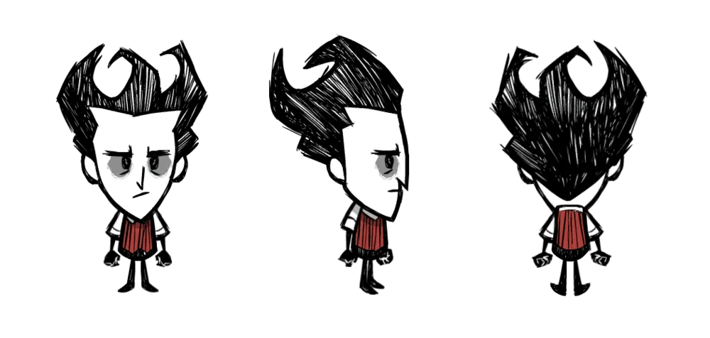
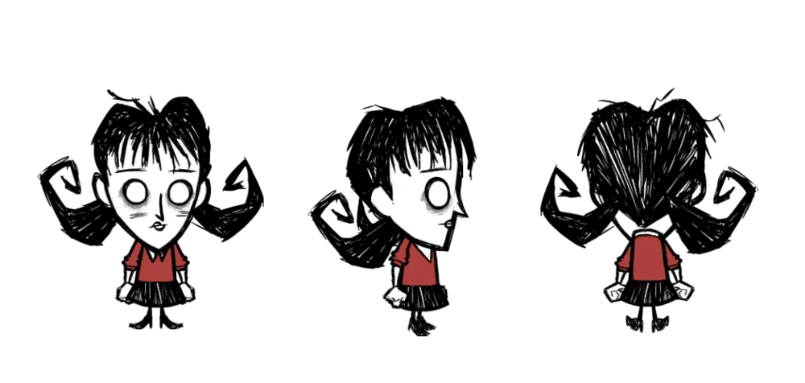
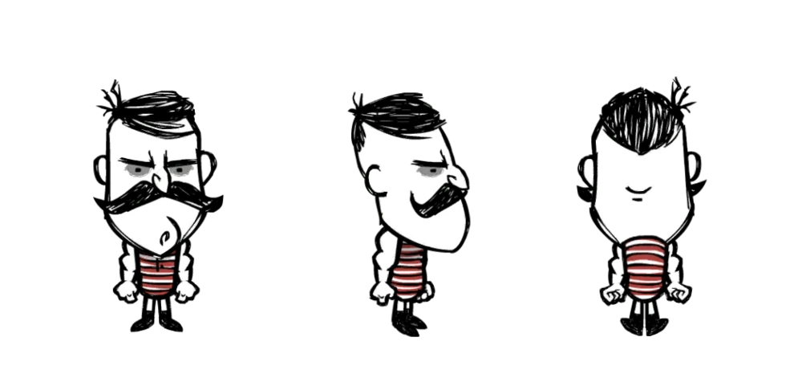
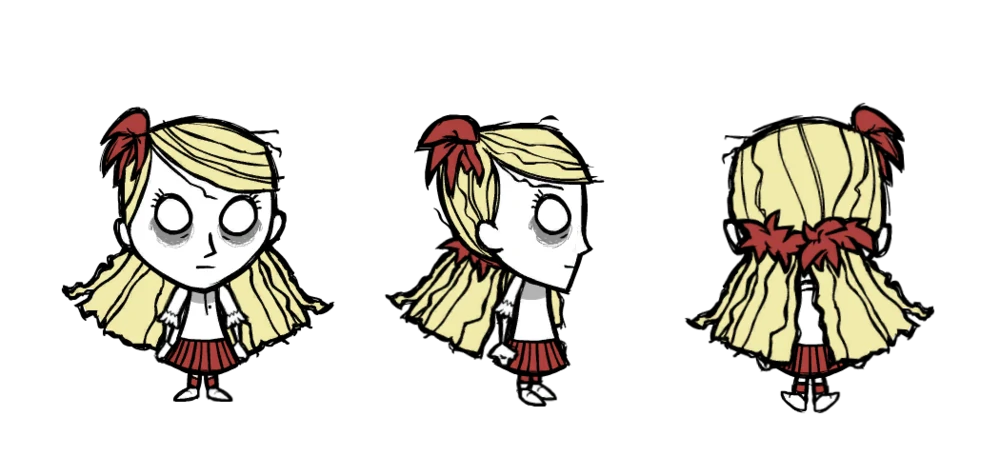
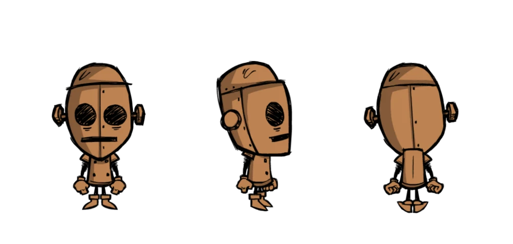
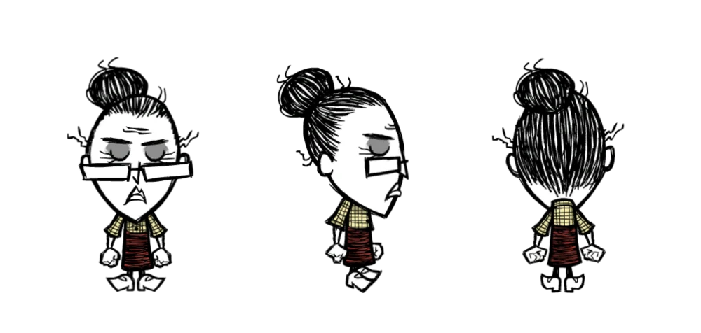
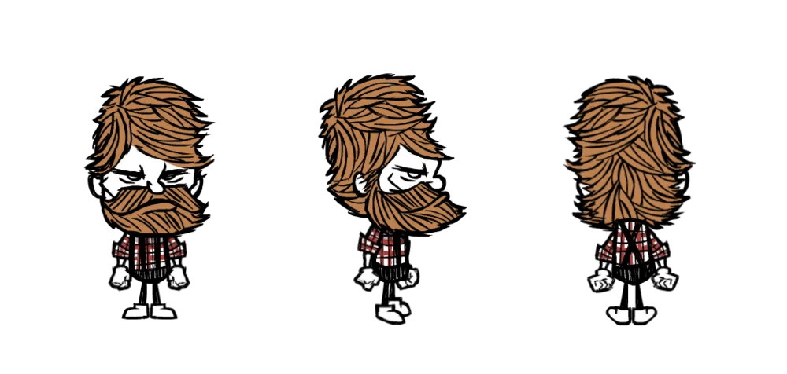
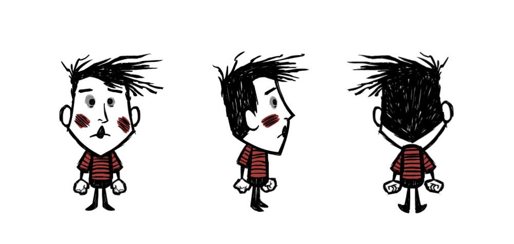
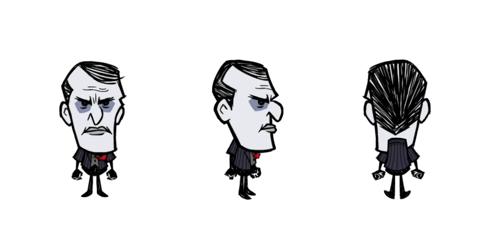

Dont Starve
Игровой процесс
Игра имеет два режима игры: выживание и приключение (в мобильной версии игры также имеется свободный режим - это более лёгкая версия игры), однако прямой доступ к игре имеет только режим выживания. Выбрав персонажа, который имеет свои уникальные способности, а также настроив мир, игрок может начать выживать. Персонаж появляется в неопределённом месте, где его встречает Максвелл (В DLC Shiperwecked игрока встречает попугай с пиратской шляпой, в DLC:Hamlet: Хамелеон), который советует поискать дрова для огня. Цель игры — продержаться в случайно собранном мире как можно дольше. У игрока есть три концовки: смерть, переход в новый мир или спасение Максвелла. Сутки делятся на три промежутка: день, вечер и ночь (некоторых промежутков может не быть в зависимости от настроек мира). Днем игрок может вести обычный образ жизни: собирать предметы, взаимодействовать с другими существами, есть, исследовать и т. д. Вечер является предупреждением перед ночью: игрок также может вести дела, однако ему нужно задуматься и приготовить все для того, чтобы пережить ночь. Отличие от дня только в слабом освещении и снижении рассудка персонажа. Когда наступает ночь, игрок перестаёт видеть и быстрее сходит с ума. Также бездействовать ему не даст ночной монстр по имени Чарли, но ходят слухи что это волки, или же маньяки (ранее Гру). У персонажа есть три основных параметра: здоровье, сытость и рассудок. Первый — самый главный. Игрок должен следить за наличием очков здоровья, иначе персонаж умрет. Здоровье понижается, когда персонажа кто-нибудь ударит и обморожении и перегреве. Значение сытости показывает насколько голоден персонаж. Его можно пополнить путём потребления пищи. Обнуление сытости не ведет к мгновенной смерти, однако постепенно снижает здоровье. Рассудок никак не связан со здоровьем, однако если он низок, то появятся кошмары, которые могут нанести действительный урон персонажу. Рассудок понижается при темных временах суток (при любых обстоятельствах), когда персонаж находится рядом с монстрами, а также при употреблении несвежей или сырой еды. Понижение рассудка спровоцирует появление нереальных зрительных и звуковых факторов. Рассудок можно повысить сбором цветов, сном, готовкой зеленых грибов или специальных блюд, повышающих рассудок (ириски, вареники).
Персонажи
- Уилсон Персиваль Хиггсбери — псевдоученый. Первый и уже доступный персонаж игры. Он участвует в трейлере к игре. Один из двух персонажей в игре, который умеет отращивать бороду и сбривать её. Борода защищает его от холода. Бороду можно сбрить бритвой, она даёт определённое количество волос и поднимает рассудок. Его голос звучит как труба с сурдиной. 
- Уиллоу — поджигательница. Первый женский персонаж, а также первый открываемый персонаж в игре. Не получает никакого урона от любых источников огня, а также пополняет уровень рассудка, находясь возле огня. У неё при появлении есть уникальный предмет — зажигалка, и в Don't Starve Together плюшевый медведь Берни. При низком рассудке Уиллоу Берни будет становиться большим и атакует ужасы и враждебных существ, после того как у Уиллоу станет рассудок больше или Берни погибнет он превращается в сорванного мишку Берни, но его можно починить при помощи швейного набора. Поэтому, играя за неё, бояться кошмаров не нужно. При рассудке ниже 60 она случайно зажигает огонёк под ногами, что может привести к пожару на вашей базе. Получает меньше урона от перегрева и меньше ему подвержена. Разжигает костёр эффективнее других персонажей в 1.5 раза. Не получает урона при тушении предметов, а также делает это быстрее других персонажей. Теряет рассудок и получает больше урона от замерзания. Больше подвержена как замерзанию, так и замораживанию (например, от циклопа-оленя или ледяного посоха), а тёплая одежда ей помогает хуже, чем остальным персонажам. Имеет мало единиц рассудка и, следовательно, другие пороги безумия. 
- Вольфганг — силач. Способность этого персонажа заключается в том, что при высокой степени сытости он становится сильнее и у него увеличивается здоровье. Вольфганг гораздо быстрее голодает. И, несмотря на его большие усы, Вольфганг не может вырастить бороду. Также он боится темноты (в темноте понижается рассудок), а голос его звучит как туба. 
- Венди Лилиан Картер — имеет довольно интересную способность: из цветка, который есть у неё с самого начала, выложенном на землю, при убийстве кого-либо, будет появляться призрак её покойной сестры-близняшки Абигейл, который будет сражаться с любым мобом, пытавшимся атаковать Венди. Она и её сестра Абигейл являются дочерьми Джека Картера — брата Максвелла. Голос Венди, как и у Уиллоу, похож на флейту. 
- WX-78 — робот. WX-78 может есть несвежие и испорченные продукты без вреда здоровью или штрафа к голоду, но не может есть гниль. Также он может есть шестеренки. Изначально у него скромные характеристики, но если он съест 15 шестеренок (никто, кроме него не может есть шестерёнки), то у него будет 400 здоровья, 200 сытости и 300 рассудка! WX-78 плохо реагирует на дождь. Если в него попадет молния, он пополняет здоровье, теряет рассудок, светится и быстрее передвигается. Его голос похож на синтезатор. 
- Уикерботтом — старушка-библиотекарша. За свою жизнь прочитала очень много умных книг, поэтому во время игры она получает рассудок в размере 250 единиц и бонус к исследованиям: например, если другим персонажам для рецепта создания лопаты требуется научная машина, то Уикерботтом может сделать её без машины. Единственная из всех может создавать книги. Получает больше штрафа от испорченной пищи и не может спать. Её голос звучит как гобой. 
- Вуди — шестой персонаж, открываемый при помощи опыта. Способность Вуди заключается в том, что он имеет любимый топор по имени Люси, который является его женой и рубит деревья в 2 раза быстрее. Но если он срубит слишком много деревьев, либо если съест мясо монстра или один из специальных идолов(только для Don't Starve Together), либо наступит полнолуние, Вуди превратится в гигантского бобра с одной шкалой — «древесным голодом», пополняющимся за счёт поедания древесины. В Don't Starve Together имеет ещё две формы — боевую в виде лося и для быстрого передвижения в виде гуся, а шкала «древесного голода» заменена «оборонетнеметром», пополняющимся за счёт выполнения действий, для которых предназначена та или иная форма. После того как параметр этой шкалы достигнет нуля, бобёр засыпает, а наутро Вуди вновь становится нормальным. В Don't Starve Together после пробуждения Вуди просыпается с голодом 0. Его голос похож на скрипку. 
- Вэс — мим. Немой персонаж. Выражает все свои мысли жестами. Его способность — слабость, так как он был создан разработчиками в качестве вызова опытным игрокам. Все параметры Вэса (Сытость, Здоровье, Рассудок) меньше, нежели у других героев. Он хрупок настолько, что может умереть даже с почти полным Здоровьем, Сытостью и Рассудком. Его уникальный предмет — шарики, при их создании он теряет немного рассудка, но при лопании они наносят урон, а мобы могут атаковать их. 
- Максвелл — как игрового персонажа, его можно открыть при полном прохождении режима приключений. До этого мы видели его в самом начале игры. Максвелл — тот самый, кто запер нас в этом странном мире. До событий игры он был иллюзионистом Уильямом Картером, который использовал имя Максвелл в качестве сценического псевдонима. Способность — восстанавливать рассудок, находясь рядом с врагами. Изначально у него есть тёмный меч, тёмная броня, аметист и книга Кодекс Умбра, с помощью которого Максвелл может создать своих теневых двойников. Его голос звучит как фисгармония. 
Отзывы
Dont Starve получила «в основном положительные» отзывы, согласно англоязычному сайту-агрегатору, собирающему отзывы о видеоиграх Metacritic.[15] Игра продалась в 1 миллион копий к концу 2013 года.[16] Don’t Starve стала финалистом в подкатегории «Совершенство в Дизайне» в 2014 на церемонии Intependent Games Festival. Игра так же получила похвальные оценки в категориях «Совершенство в Изобразительном Искусстве» и «Совершенство в Аудио».[17] Визуальный стиль игры был хорошо принят критиками. Журналист GameSpot Нейтан Менье похвалил атмосферу и визуальный дизайн игры.[18] Марти Сильва из IGN выразил «большое одобрение стилю в виде вырезок из бумаги и причудливой визуализации», хваля жутковатые образы, которыми обладают обыкновенные предметы, благодаря «вдохновленному готикой» стилю.[19] Журналист Game Informer Джефф Марчиафава заявил, что «мультяшный стиль делает исследования огромного, сгенерированного мира сплошным удовольствием».[20] Обозревая версию для PlayStation 4, Джордан Деворе из Destructoid сказал, что игра выглядит и работает очень хорошо на консоли, однако он заметил «пикселизацию», когда экран приближается в инвентаре. Он также отметил, что управление на геймпаде, будучи менее эффективным, чем на клавиатуре, все еще остается приятным.[21] Музыка игры тоже была хорошо принята. Сильва сравнил ее с карнавальной музыкой и назвал ее «мгновенно заедающей в голове», несмотря на малое разнообразие.[19] Джанкарло Салдана из GamesRadar назвал ее «жуткой, но спокойной» и похвалил ее роль в создании атмосферы опасного и одинокого мира.[22] Критики в основном одобрили, однако выразили смешанные мнения о высоком уровне сложности в игре. Это мнение отражается в комментарии Сильвы: «Don’t Starve никогда не будет держать вас за ручку, и мне одновременно нравится это и нет». Например, ему показалось, что некоторые его смерти были несправедливо вызваны игровой камерой, загораживающей необходимые объекты. Менье заявил, что «выживание не является простым, но это вызывает свое, несомненное увлечение», однако он поместил сложность игры в список ее недостатков.[18] Леон Херли из Official PlayStation Magazine сказал, что «половину веселья составляет обучение и каждая, даже самая маленькая победа заставляет тебя чувствовать особую гордость».[23] Обзорщики также выразили мнение, что уровень веселья игроков будет напрямую зависеть от их уровня погружения в выживание.[21][20][22] Отсутствие механики вечного сохранения и постоянность смерти также были строго встречены критиками. Марчиафава, будучи фанатом игр с постоянной смертью заявил, что в отличие от The Binding of Isaac и Spelunky, Don’t Starve является куда более длинной игрой, и смерть ощущается куда более тяжелой потерей.[20] Менье отметил, что новизна от старта нового мира постепенно уходит, «когда выполняешь одни и те же задачи в попытке наверстать упущенный прогресс».[18] Сильва выразил разочарование, что после смерти от лягушки, игра никак не поощрила его, и заявил, что ему становится скучно примерно через 30 минут после старта нового мира.[19] Однако Салдана поспорил, что «таким образом игрок получает знания об игре» и что постоянные старты сначала являются обязательной частью постепенного прогресса.[22] Разнообразие способов умереть было широко восхвалено критиками. Говоря о вреде, причиняемому игроку низкой температурой, Менье отметил, что «эта интересная деталь добавляет глубину и дополнительную сложность к уже непростым механикам выживания».[18] Джессика Кондитт из Joystiq похвалила высокое количество способов умереть и понятный способ отображения здоровья, голода и уровня рассудка игрока.[24] Салдана заметил, что странность дизайна некоторых монстров будет держать игроков в постоянном напряжении.[22]